決済・ポイント統合
2023 —上場 Fintech で PdM 主責 · 8+ ブランド接続RECONSTRUCTED
COMMON
LAYER
LAYER
PRODUCT MANAGEMENT / AI & SAAS
仕様を書き、コードを読み、受入条件まで自分で通す PdM。
決済・SaaS の経験と、AI を使った実装をつなぎます。
01 / PRODUCT TYPES
決済・予約・POS・P2P 金融・IoT・AI ワークフロー。業務案件は構造のみ再構成しています。
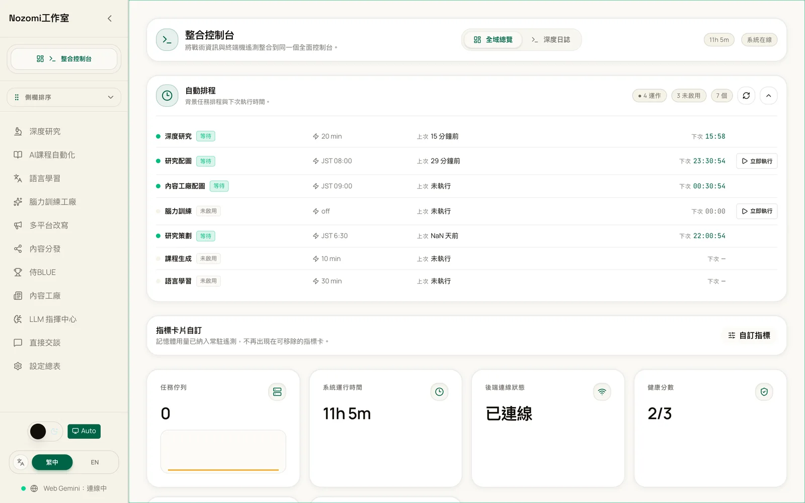
守秘情報を除き、業務系 5 案件は構造のみ再構成。AI ワークフローのみ実際の画面です。
02 / SELECTED CASES
標準化、方向転換、AI の工程化。課題・判断・担当を先に読めます。
STANDARDIZATION / FINTECH
DIRECTION CHANGE / SAAS
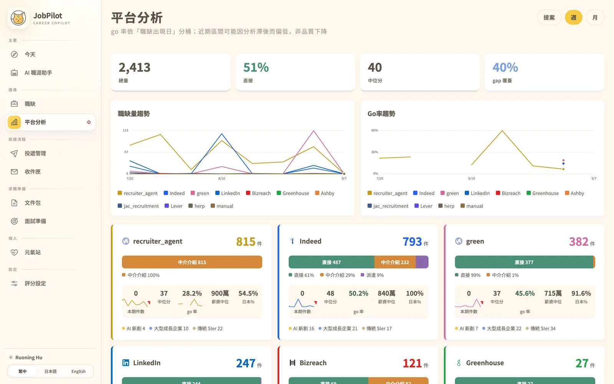
AI ENGINEERING / PERSONAL
03 / CORE CAPABILITIES
五つの能力を、それぞれ二つの確認可能な事例へ接続します。★ は対外的な差異点です。
04 / VERIFIED EVIDENCE
2026-09-08 時点の実装スナップショット。利用効果や売上への寄与とは分けて表示します。
個人業務を止めない自動化基盤
Fintech 開発を Gate でつなぐ
質問を脱敏して知識へ接続
要求から検証までを閉じる PM SaaS
原稿から複数形式へ変換
数値は公開可能なファイル、設定、README とコードから確認。事業 KPI を示すものではありません。
05 / ALL PRODUCTS
画像とプロダクト名だけで、取り組んできた領域の広がりを見渡せます。
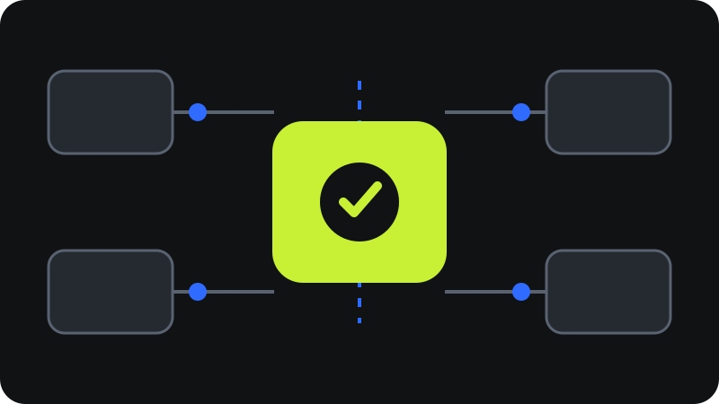
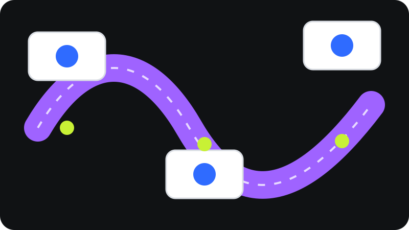
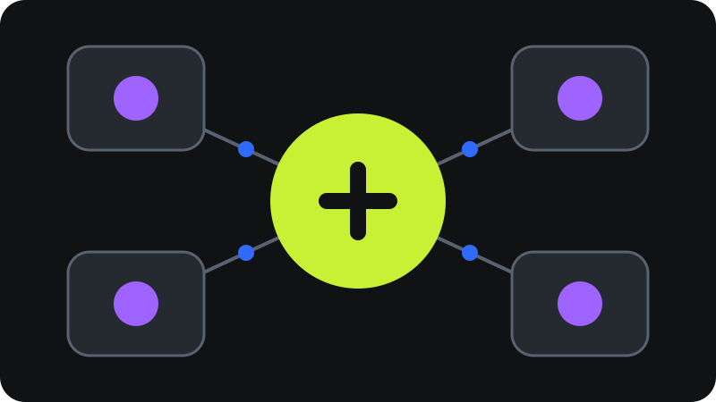
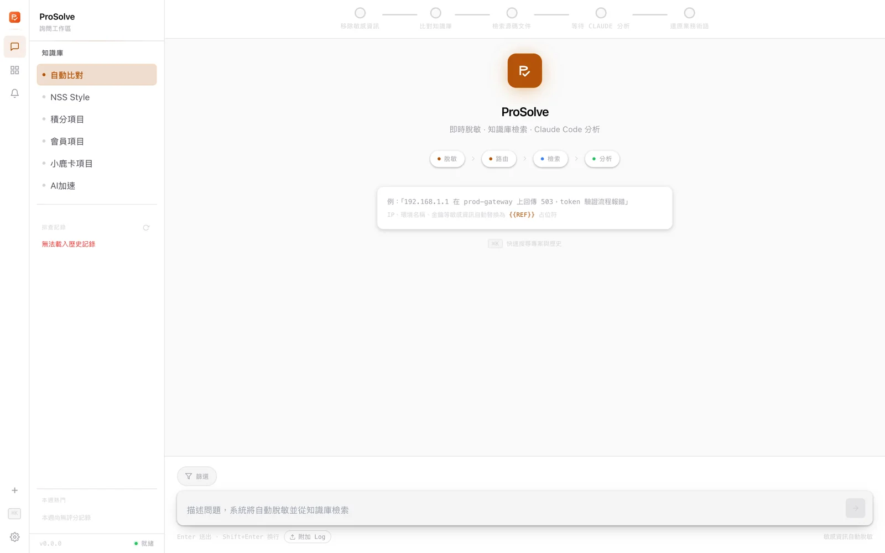
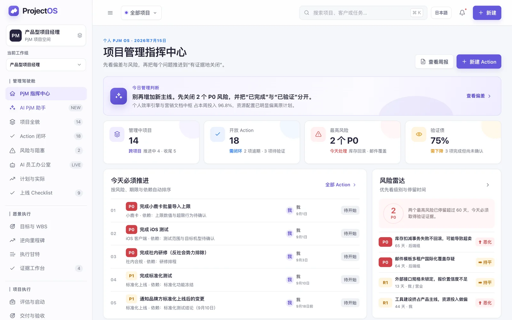
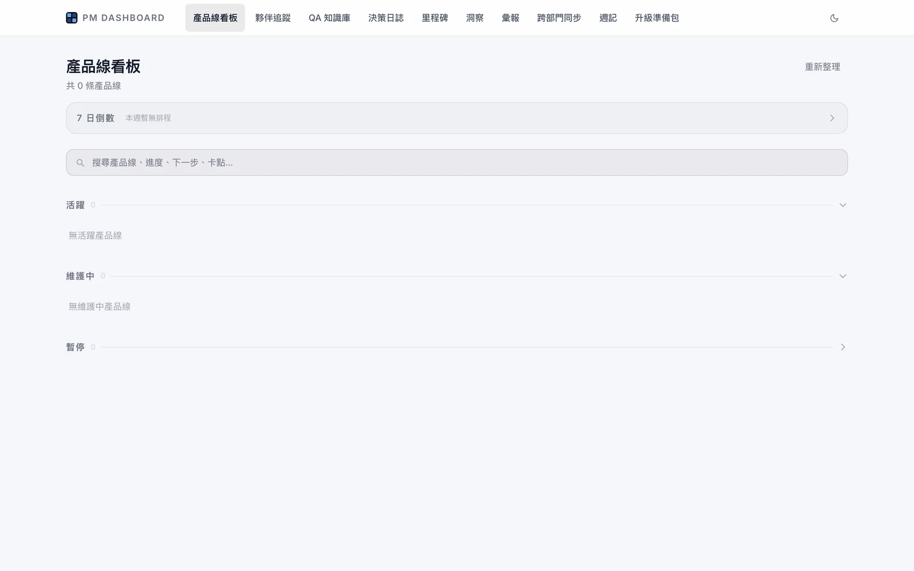
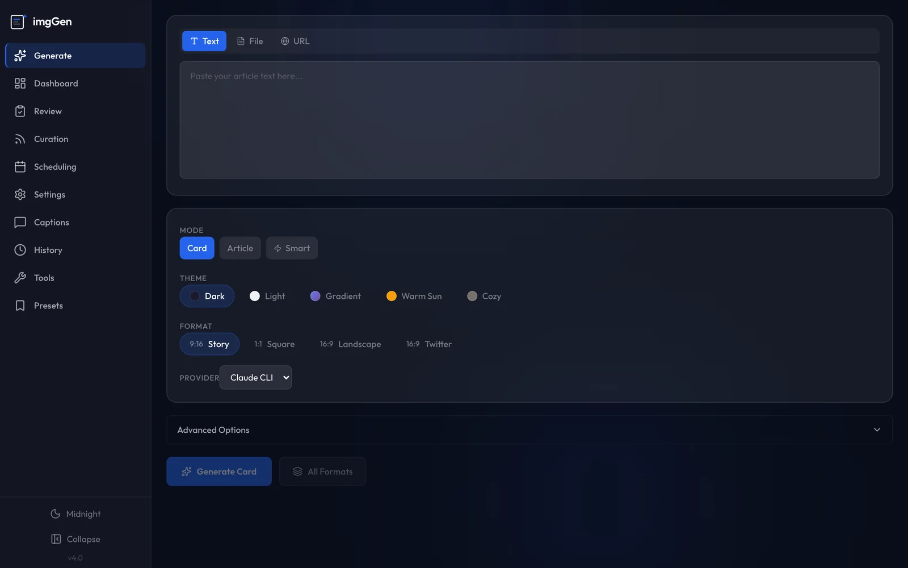
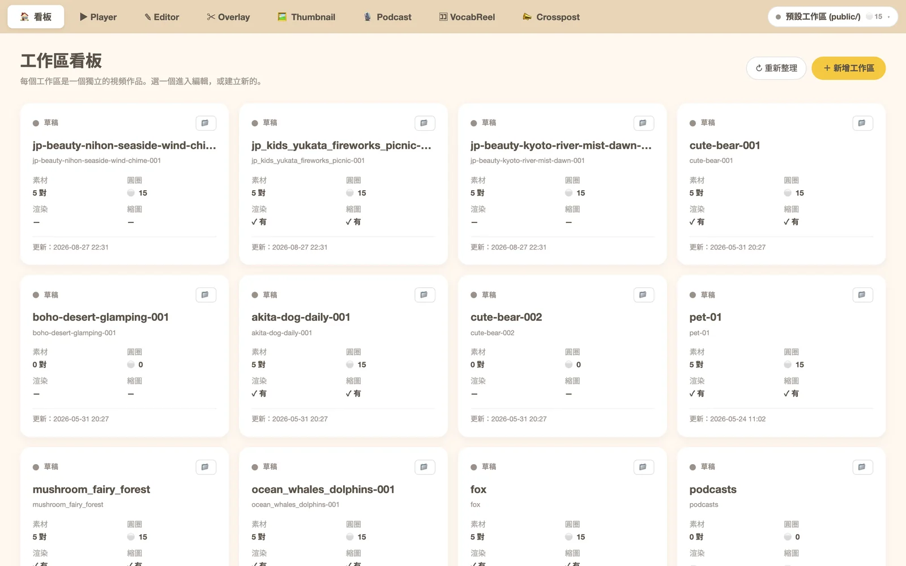
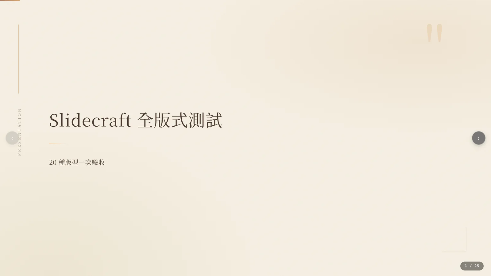
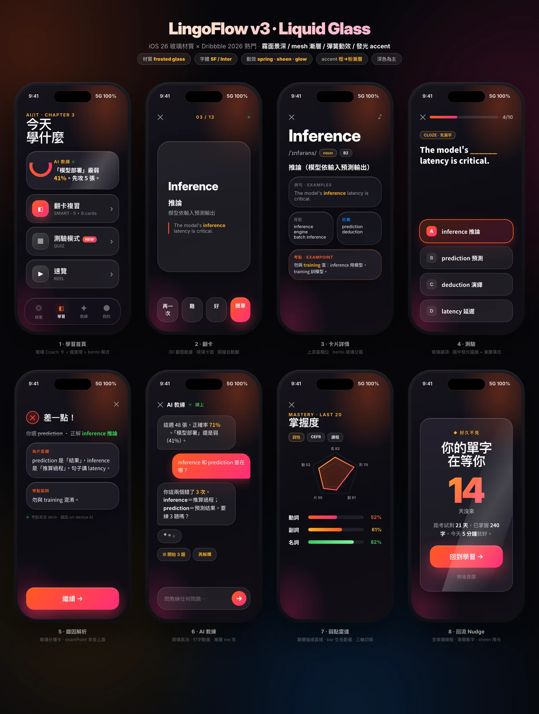
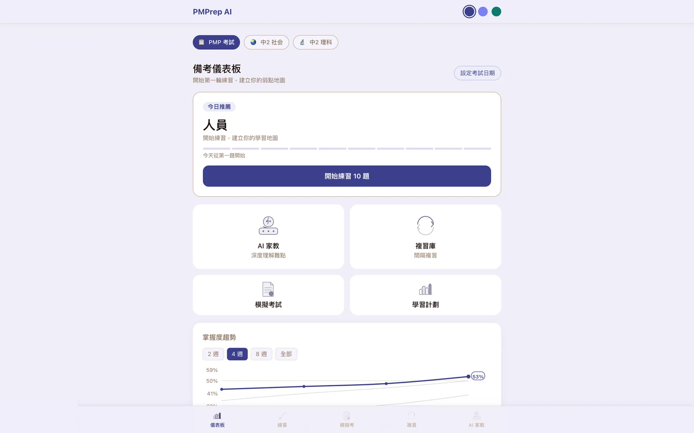
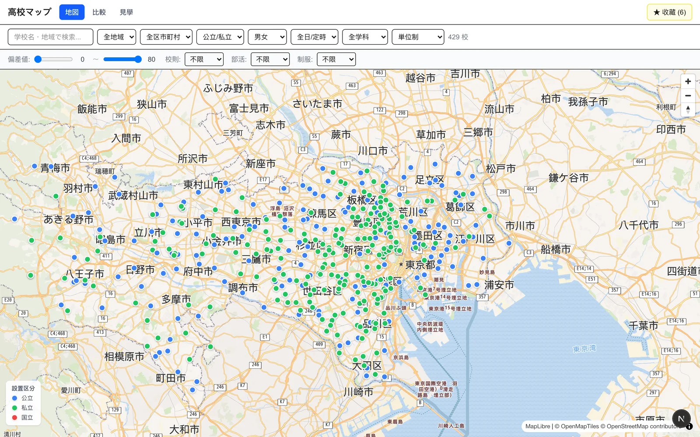
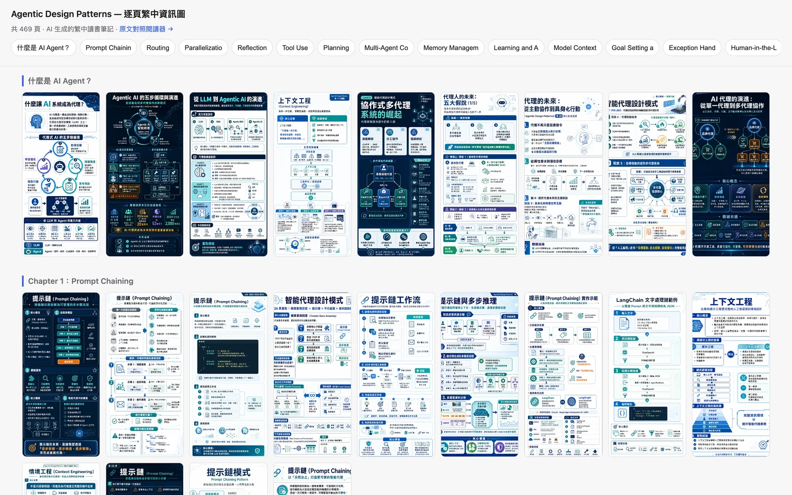
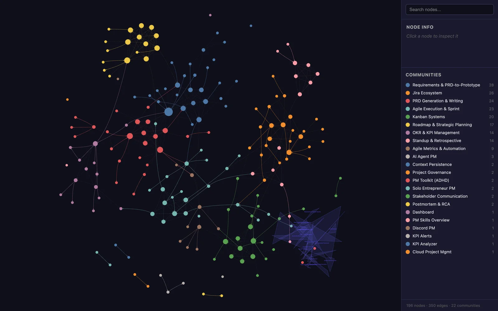
06 / LET'S TALK
AI・業務 SaaS・複雑な業務プロセスのプロダクトづくり。
Ruoning Hu / 胡 若寧Tokyo · Product Manager · Japanese / Chinese
ABOUT / RUONING HU
仕様と業務、事業と技術。その間にある判断を、実装と受入までつないできました。
共通にできる部分と、残すべき例外を分ける。
PRD、プロトタイプ、API、受入条件へ落とす。
未検証を明示し、次に測るものを決める。
01 / EXPERIENCE
決済 → リテール SaaS → 金融 → IoT → エンジニアリング。
日本の Fintech 企業で、ポイント接続・会員・精算・予約を横断。要件からリリースまで推進。
POS 製品の要件・UX・ロードマップと、複数プラットフォームの改善。
受託プロジェクトで要求と実装の間を調整。
P2P 金融の 0→1 と Growth、エレベーター状態監視・警報システム。
Java の設計・実装・テストから、業界調査とプロジェクト支援へ。
02 / COLLABORATION
複数の利用者、権限、外部接続を含む SaaS を、使える体験へ。
デモから、品質・コスト・失敗時の扱いを考えた運用へ。
日本語・中国語での協働。仕様と受入条件で専門性の間をつなぐ。